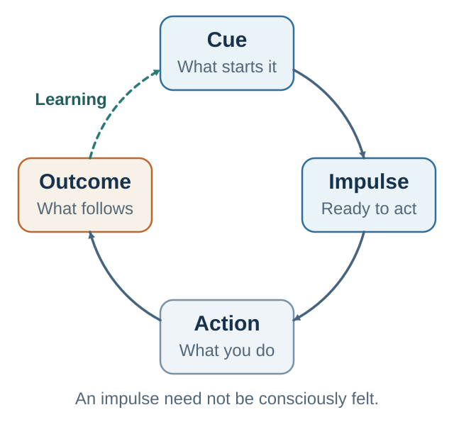
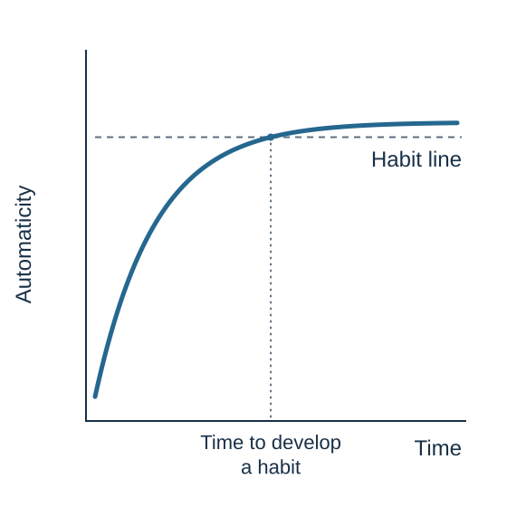
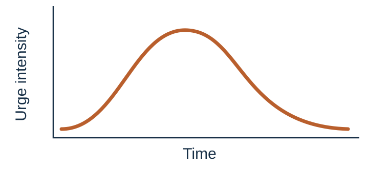

21 Habits, Wanting, and Self-Control
The past can cue action before the present has finished deciding
Learning goals
- Map a repeated behavior from cue ecology through response tendency, action, immediate consequence, and learning, while treating wanting as a possible rather than required experience.
- Distinguish goal-directed control, habit, wanting, liking, and clinically significant addiction.
- Produce an upstream self-control and recovery plan that does not depend on uninterrupted willpower.
A person wakes up and reaches for the phone before deciding to do so. A student opens a laptop to study and, almost before noticing, checks messages. A manager enters a tense meeting intending to listen but interrupts as soon as a proposal feels threatening. A negotiator prepares to stay calm, then makes a concession the moment the other side rejects the first offer. A team says it values learning, but whenever bad news appears the meeting automatically turns to blame.
These behaviors are not all the same. Some are helpful, some harmful, some neutral, and some depend on context. But they share a feature: they often occur without full conscious deliberation. A cue appears, attention narrows, the body prepares, an old response becomes available, and action begins before the reflective self has finished the sentence “I should decide.”
Repeated loops can make a once-deliberate behavior part of the environment–person system: the phone lights up and the hand moves; a meeting becomes tense and the manager defends. This efficiency is essential—competence relies on good routines—but it also lets an old solution act after the problem has changed.
A cue that once predicted reward can keep producing wanting after liking fades; a routine that once created speed can later block learning. The question is which behaviors should become automatic and which require review.
Why habits belong in this book
Decision, persuasion, and negotiation are usually taught as deliberate skills. We teach people to analyze options, craft messages, prepare BATNAs, identify interests, ask better questions, and evaluate trade-offs. These skills matter. But knowing what to do is not the same as doing it under pressure. A student may know to check base rates and still rely on a vivid anecdote. A manager may know to invite dissent and still reward agreement. A negotiator may know to ask diagnostic questions and still defend a position when status feels threatened.
Habits are the bridge between knowledge and repeated action. Expertise is not only having concepts available in memory. It is making useful behaviors easier, more automatic, and more protected from distraction, emotion, and social pressure. In this sense, good judgment should become partly habitual. The scientist habitually asks what would falsify a claim. The doctor habitually washes hands. The manager habitually asks what is missing. The negotiator habitually prepares interests before numbers. The ethical persuader habitually asks whether the audience would endorse the design if it were explained.
This chapter therefore treats habit as both a risk and a resource. Bad habits compress old solutions into present responses. Good habits compress good judgment into reliable action. The goal is not to make all behavior conscious. The goal is to make the right things automatic and the right things reflective.
What is a habit?
A habit is a learned association between a context cue and a response. The cue may be physical, such as a kitchen, desk, classroom, car, phone screen, coffee machine, supermarket, or meeting room. It may be temporal, such as morning, after lunch, Friday evening, before sleep, or the first five minutes after opening a laptop. It may be social, such as being with certain friends, hearing a supervisor speak, entering a negotiation, or noticing group silence. It may be emotional, such as boredom, anxiety, fatigue, loneliness, anger, excitement, shame, or uncertainty.
The response may be physical, mental, emotional, or social: eating, scrolling, smoking, exercising, checking email, apologizing, avoiding, arguing, smiling, rehearsing worries, asking a question, interrupting, withdrawing, or reaching for coffee. The response becomes more likely as it is repeated in that context. Reward, relief, completion, social approval, and reduced effort can strengthen the loop, but past reinforcement is not the defining source of every habit.
This definition prevents a common mistake. A habit is not simply something done often. It is something that becomes cued by context. A person may attend a conference every year, but the context may be too rare for automaticity. Another person may check the phone whenever anxious; because anxiety and phone availability are frequent cues, the behavior may become strong even if each single episode is brief.
Habits are efficient because they reduce cognitive load. The mind does not want to solve the same problem from scratch every time. It stores repeated patterns. If the same cue reliably calls for the same response, automaticity is useful. But the same efficiency becomes a problem when the old response no longer serves the current goal. The central paradox is simple: habits help us by making useful behavior automatic, but hurt us when automatic behavior no longer fits the situation.
In decision terms, habits are compressed decision loops. The cue carries prediction: this situation has led to reward, relief, or completion before. The response carries cached value: this is what worked here. The choice is not absent; it is shortened, routinized, and often hidden from conscious report.
Goal-directed and habitual control
A conscious decision is flexible. It asks: given my current goals, beliefs, constraints, and options, what should I do now? It can simulate outcomes, compare alternatives, and adapt to novelty. A habit is less flexible. It says: when this cue appears, do this. It is fast, low-effort, context-bound, and learned from the past.
In one reinforcement-learning framework, goal-directed decisions are modeled as model-based and some habitual control as model-free. Model-based algorithms use an internal transition model to simulate how actions lead to outcomes; model-free algorithms use cached action values or policies learned from feedback. This computational contrast can explain some behavior, but it is not a definition of habit. In plain language, model-based control asks, “What will happen if I do this now?” A model-free policy says, “In this state, choose the action that previously had value.”
Imagine choosing dinner. The goal-directed system asks what you want, how hungry you are, what food is available, what you ate earlier, and what will make you feel good later. The habit system says: I am watching television; this is when I snack. Imagine checking email. The goal-directed system asks whether email helps the current task. The habit system says: I opened the laptop; check email. Imagine a difficult conversation. The goal-directed system asks what outcome you want and what the other person needs to understand. The habit system says: I feel criticized; defend.
This distinction does not mean conscious decisions are always good and habits are always bad. Conscious decisions can be biased, slow, exhausting, and overconfident. Habits can be wise, efficient, and morally useful. A person can habitually listen carefully, exercise, prepare, save, speak kindly, check assumptions, or ask one more question. The question is not whether behavior is automatic. The question is whether the automatic pattern still serves what matters.
How habits form

Habits form through repetition in stable contexts, especially when behavior produces reward or relief. At first, a behavior may require intention. A person decides to meditate, run, write, save, practice, or avoid checking the phone. The action is effortful because the cue-response association is weak. The person must remember, initiate, and persist.
Automaticity develops gradually and varies substantially by behavior and person rather than following a fixed 21-day rule (Lally et al., 2010).
Habits are learned context-response associations that strengthen through repetition in stable settings; frequency alone is not the definition of habit (Wood et al., 2002; Wood & Neal, 2007; Wood & Rünger, 2016).
With repetition, the context begins to cue the response. The behavior becomes easier, faster, and less dependent on conscious motivation. Lally and colleagues (2010) studied everyday habit formation and found that automaticity increased gradually, often over weeks or months, with large variation across behaviors and people. The popular claim that habits form in exactly twenty-one days is too simple. Complexity, reward, consistency, context, and personal circumstances all matter.
Habit formation depends on several conditions. First is repetition: the behavior must occur often enough for the association to strengthen. Second is context stability: the behavior should occur in a similar situation so the cue can attach to the response. Third is reward or relief: the behavior must produce something the system treats as valuable. Fourth is ease: behaviors that are easy to perform are more likely to repeat. Fifth is attention at the beginning: early habit formation often requires conscious design before automaticity can take over.
This is why a vague intention such as “I will exercise more” is weak. It lacks cue, action, context, and reward. A stronger habit structure is: after I finish lunch, I put on walking shoes and walk for ten minutes around the same route; afterward I mark the calendar. The cue is lunch. The response is shoes and walking. The context is stable. The reward is immediate enough. The repeated loop can become automatic.
The science of habit formation supports a practical principle: a behavior becomes easier to repeat when it is attached to a stable cue and followed by a meaningful reward or relief.
The curve is gradual, not a deadline
In Lally and colleagues’ field study, modeled time to reach near-asymptotic automaticity varied widely—from 18 to 254 days, with a median of 66 days among fitted participants (Lally et al., 2010). The numbers are not a new rule. They show why “a habit takes twenty-one days” is the wrong question. A simple action in a stable setting and a demanding action in a shifting setting do not have the same learning curve.
One missed opportunity did not materially derail the overall trajectory, but the omission did not strengthen automaticity either. The useful distinction is pause without reset: a missed occasion contributes no new cue-response repetition, while subsequent successful repetitions can continue building on prior learning. In the study, automaticity showed a very small immediate decrease after a single omission and no detectable longer-term cost; this does not establish that every lapse is harmless or that automaticity follows a perfectly flat line during a miss.

The curves are deliberately unnumbered: they visualize gradual, heterogeneous learning rather than converting the study’s range into a new personal deadline.
This boundary changes coaching. A streak can make progress visible, but one broken streak should not become evidence that the learner has returned to zero. Nor should the missed day be counted as another strengthening repetition. Measure whether the association becomes easier, faster, and more reliably cued across successful cue-linked performances—not only consecutive calendar marks.
The habit loop
A habit loop is a practical model for repeated behavior: cue, response tendency, response, outcome, and learning. An urge or craving is common—especially when a cue predicts reward or relief—but it is not required for a response to be habitual. The cue makes a behavior available; the response tendency may be felt as desire, tension, anticipation, discomfort, curiosity, or simply movement already beginning. The outcome may provide positive reinforcement, negative reinforcement through relief, or a cost whose delay makes it weak as a learning signal. Learning changes what the cue and action are expected to deliver.
The reward does not have to be pleasure. Relief is often enough. A person checks email to reduce uncertainty. A student procrastinates to escape discomfort. A manager micromanages to reduce anxiety. A person avoids a difficult conversation and feels immediate relief. That relief reinforces avoidance, even if the long-term outcome is worse.
Phone checking illustrates the loop. Cue: a pause, boredom, uncertainty, notification, or difficult task. Urge: “Maybe something happened.” Response: unlock, swipe, check, scroll. Reward or relief: novelty, social signal, escape from ambiguity, or temporary reduction of boredom. Learning: pauses become phone-shaped.
Procrastination has a similar structure. Cue: ambiguous task, high standards, fatigue, or fear of evaluation. Urge: escape discomfort and protect self-image. Response: research more, clean, check email, wait for pressure. Reward or relief: temporary freedom from evaluation. Cost: deadline panic, lower quality, and an identity story such as “I work under pressure.” Procrastination is often emotion regulation with interest.
Defensiveness in feedback is also a habit. Cue: criticism, correction, silence, or questioning tone. Urge: protect competence, dignity, status, or belonging. Response: explain, interrupt, counterattack, or withdraw. Reward or relief: immediate self-protection. Cost: less learning, lower trust, fewer honest signals. Many relationship problems are automatic protection routines.
The first rule of habit diagnosis is therefore: do not remove a behavior until you understand the local problem it solves. A replacement behavior must answer the same cue more wisely. If the old habit solved uncertainty, the new response must provide a better way to handle uncertainty. If the old habit solved status threat, the new response must preserve dignity while opening learning.
Reward, relief, and variable reinforcement
Thorndike (1911) described the law of effect: behaviors followed by satisfying consequences become more likely. Skinner (1938) later developed operant conditioning, showing how reinforcement and punishment shape behavior. Modern reinforcement learning describes how organisms learn from reward, punishment, and prediction error.
Intermittent reinforcement is especially important. A reward that appears unpredictably can make a behavior persistent because the next attempt might produce the reward. Gambling, email, social media, market prices, dating apps, and many digital platforms use variable novelty, social feedback, and uncertainty. The user does not know when the next interesting message, signal, or reward will appear, so checking continues.
Variable rewards are not magic, and not all digital habits are addiction. But uncertainty keeps prediction active. The brain keeps asking: is this the time something interesting happens? That question can become a behavioral engine.
This distinction also protects the boundary between habit and diagnosis. A sticky variable-reward loop may deserve redesign, but frequent use alone does not establish addiction. Clinical impairment, loss of control, continued behavior despite harm, withdrawal or medical risk, and the wider social and psychological context require a different level of assessment.
This matters ethically. A language-learning app can use streaks and feedback to support a learner’s endorsed goal. The same psychological architecture can also harvest attention, hide costs, or make exit difficult. Habit design can serve agency or capture it.
Wanting can outlast liking
Liking is experienced pleasure. Wanting is motivational pull: the “go get it” force that makes a cue compelling. The two often travel together, but they can separate. A person may want to check a phone and dislike what follows, crave a cigarette and dislike its taste, or pursue status while finding the pursuit exhausting. The diagnostic question is simple: What does the cue promise, and what does the outcome actually deliver?

A craving can feel like an instruction, but it is an experience containing sensations, images, emotion, and an action tendency. It also contains a forecast: obeying will bring pleasure, relief, completion, escape, or control. Sometimes that short-run forecast is accurate. The crucial comparison is whether the usual action delivers what the cue promised across the full time path.
The intention–behavior gap is an environment problem
Intentions are often abstract and formed in a cool state; execution occurs in the presence of a concrete cue, immediate reward, fatigue, anxiety, or status threat. This hot–cold empathy gap helps explain why “I will exercise,” “I will listen,” or “I will save” can lose at the relevant moment (Loewenstein, 1996). Present bias adds a temporal asymmetry, but neither mechanism establishes a defective character.
The classic marshmallow task makes the boundary visible. Waiting depends on attention strategy, incentives, and beliefs that the promised reward will arrive. Children exposed to an unreliable adult waited less in Kidd et al.’s (2013) experiment. Before praising inhibition or diagnosing weakness, inspect the environment the person is predicting.
Beneficial self-control often operates upstream through situation selection and reliable routines rather than continuous resistance (Galla & Duckworth, 2015; Duckworth et al., 2016). The simple fuel-tank version of ego depletion is also not a secure foundation: a large preregistered multilab replication did not support the expected effect under its protocol (Hagger et al., 2016). Motivation, attention, opportunity, beliefs, fatigue, reward, and context remain distinguishable candidates.
| Stage | Tool | Why it helps |
|---|---|---|
| Before the cue | Situation selection, availability, precommitment | Prevents the strongest loop from being recruited |
| At the cue | Prompt, if–then plan, replacement action | Makes the desired response retrievable |
| During the urge | Name sensations, delay, BRAIN/RAIN | Turns a command into a changing observation |
| After action | Immediate feedback and nonmoralizing review | Compares promised reward with actual experience |
| After lapse | Recovery plan and next-cue restart | Prevents one lapse from becoming an identity or abandoned plan |
Create space without demanding that the urge disappear
Mindful observation can insert a small interval between cue and action. It does not guarantee rapid relief, replace environmental change, or serve as treatment for withdrawal or trauma. Its narrower function is to make the state observable.

| Step | In-the-moment prompt | Function |
|---|---|---|
| B — Breathe | Take one breath before acting. | Interrupt the sequence without pretending the breath solves it. |
| R — Recognize | Name wanting, anger, anxiety, avoidance, or shame. | Move from command to observation. |
| A — Allow | Let the state be present briefly without suppression or obedience. | Reduce the second struggle about having the urge. |
| I — Investigate | Where is it? What does it predict and promise? | Turn the urge into testable data. |
| N — Non-identify and nurture | “This is an urge, not my identity.” What is the next caring action? | Protect agency and choose by values. |
BRAIN is a classroom mnemonic, not an independently validated treatment. The redesign chapter later takes the next step: it changes prompts, friction, feedback, and recovery around a diagnosed loop.
| Dimension | Conscious decision | Habitual behavior | Practical implication |
|---|---|---|---|
| Value source | Current goals and predicted consequences. | Learned cue-response history; current outcome value may exert less control. | Ask whether the behavior still serves current goals. |
| Flexibility | High: adapts to new information and changed goals. | Lower: repeats learned response when cue appears. | Use conscious review when context changes. |
| Awareness | Often reportable before action. | Often noticed after action has begun. | Study cues, not only explanations. |
| Cognitive cost | High: attention-hungry and effortful. | Low: fast and efficient. | Make good routines automatic when stakes are recurring. |
| Failure mode | Overthinking, delay, rationalization, or analysis paralysis. | Rigidity, automatic relapse, context capture. | Match the mode of control to the environment. |
| Habit example | Cue | Urge or craving | Reward or relief | Better replacement |
|---|---|---|---|---|
| Phone checking | Pause, notification, hard task, boredom. | Maybe something happened; escape uncertainty. | Novelty, social signal, relief from boredom. | Scheduled check plus capture note; phone outside reach during deep work. |
| Procrastination | Ambiguous task, high standards, fatigue. | Escape evaluation and uncertainty. | Temporary relief; self-image protection. | Two-minute next action; clarify the first visible step; ask for criteria. |
| Defensiveness | Criticism, correction, silence, questioning tone. | Protect competence and status. | Immediate dignity protection. | Breathe once; ask one example or diagnostic question before explaining. |
| Reactive concession | Offer rejected; silence at the table. | Reduce tension; avoid conflict. | Immediate relief and apparent progress. | Pause; ask what assumption makes the offer hard before changing the number. |
| Organizational blame | Error, missed target, bad news. | Protect status and assign responsibility quickly. | Emotional certainty; temporary control. | Run a learning review: what did the system make likely and what must change? |
Practice Lab
Complete a Habit–Wanting Autopsy for one mild, private behavior. Produce a diagram containing the cue ecology, response tendency, action, immediate reward or relief, delayed consequence, what the urge promised, what the outcome delivered, and what the loop learned. Then add one upstream change, one cue-linked replacement, one recovery rule after a lapse, and a seven-day observable measure. Do not redesign the behavior until you can state the local problem it solves.
Take it forward
- Use this when a repeated response begins before deliberation or remains compelling after enjoyment has faded.
- Do not infer laziness, weak character, or addiction from frequency, one lapse, or one strong urge.
- Try this next by changing the cue ecology and rehearsing the replacement at the next cue—not by waiting for stronger motivation.
A habit can make action reliable, and wanting can keep it compelling. Neither tells us whether the repeated pattern produces a satisfying, connected, or meaningful life. Deciding for a Better Life takes that next step by asking what the decision—and the routine it creates—is ultimately meant to improve.
References cited in this chapter
Lally, P., van Jaarsveld, C. H. M., Potts, H. W. W., & Wardle, J. (2010). How are habits formed: Modelling habit formation in the real world. European Journal of Social Psychology, 40(6), 998-1009.
Neal, D. T., Wood, W., Wu, M., & Kurlander, D. (2011). The pull of the past: When do habits persist despite conflict with motives? Personality and Social Psychology Bulletin, 37(11), 1428-1437.
Schultz, W., Dayan, P., & Montague, P. R. (1997). A neural substrate of prediction and reward. Science, 275(5306), 1593-1599.
Skinner, B. F. (1938). The behavior of organisms: An experimental analysis. Appleton-Century.
Sutton, R. S., & Barto, A. G. (2018). Reinforcement learning: An introduction (2nd ed.). MIT Press.
Thorndike, E. L. (1911). Animal intelligence: Experimental studies. Macmillan.
Wood, W., & Neal, D. T. (2007). A new look at habits and the habit-goal interface. Psychological Review, 114(4), 843-863.
Wood, W., Quinn, J. M., & Kashy, D. A. (2002). Habits in everyday life: Thought, emotion, and action. Journal of Personality and Social Psychology, 83(6), 1281-1297.
Wood, W., & Rünger, D. (2016). Psychology of habit. Annual Review of Psychology, 67, 289-314.
Berridge, K. C., & Robinson, T. E. (1998). What is the role of dopamine in reward: Hedonic impact, reward learning, or incentive salience? Brain Research Reviews, 28(3), 309–369.
Duckworth, A. L., Gendler, T. S., & Gross, J. J. (2016). Situational strategies for self-control. Perspectives on Psychological Science, 11(1), 35-55.
Galla, B. M., & Duckworth, A. L. (2015). More than resisting temptation: Beneficial habits mediate the relationship between self-control and positive life outcomes. Journal of Personality and Social Psychology, 109(3), 508-525.
Hagger, M. S., Chatzisarantis, N. L. D., Alberts, H., Anggono, C. O., Batailler, C., Birt, A. R., Brand, R., Brandt, M. J., Brewer, G., Bruyneel, S., Calvillo, D. P., Campbell, W. K., Cannon, P. R., Carlucci, M., Carruth, N. P., Cheung, T., Crowell, A., De Ridder, D. T. D., Dewitte, S., et al. (2016). A multilab preregistered replication of the ego-depletion effect. Perspectives on Psychological Science, 11(4), 546-573.
Kidd, C., Palmeri, H., & Aslin, R. N. (2013). Rational snacking: Young children’s decision-making on the marshmallow task is moderated by beliefs about environmental reliability. Cognition, 126(1), 109-114.
Koob, G. F., & Volkow, N. D. (2016). Neurobiology of addiction: A neurocircuitry analysis. The Lancet Psychiatry, 3(8), 760-773.
Loewenstein, G. (1996). Out of control: Visceral influences on behavior. Organizational Behavior and Human Decision Processes, 65(3), 272-292.
Robinson, T. E., & Berridge, K. C. (1993). The neural basis of drug craving: An incentive-sensitization theory of addiction. Brain Research Reviews, 18(3), 247-291.